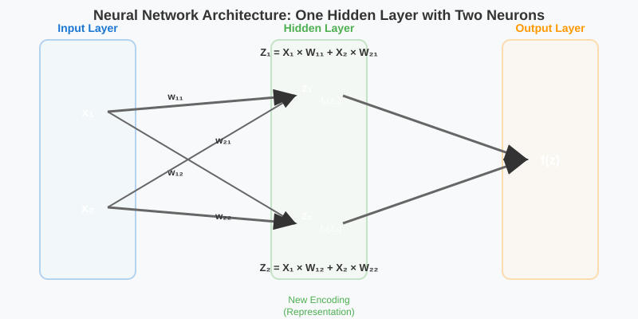
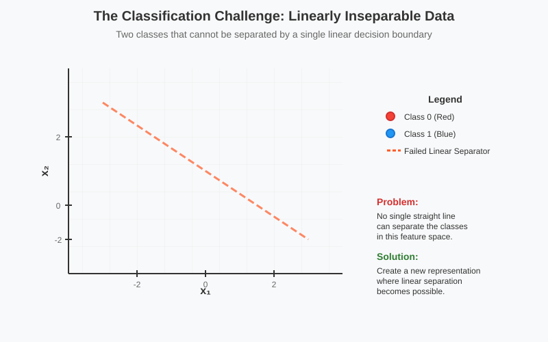
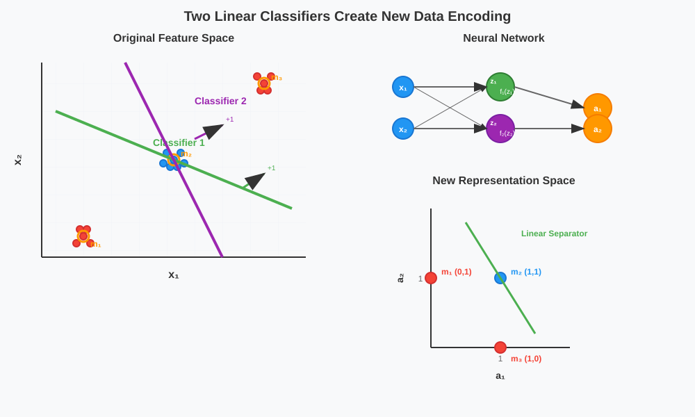
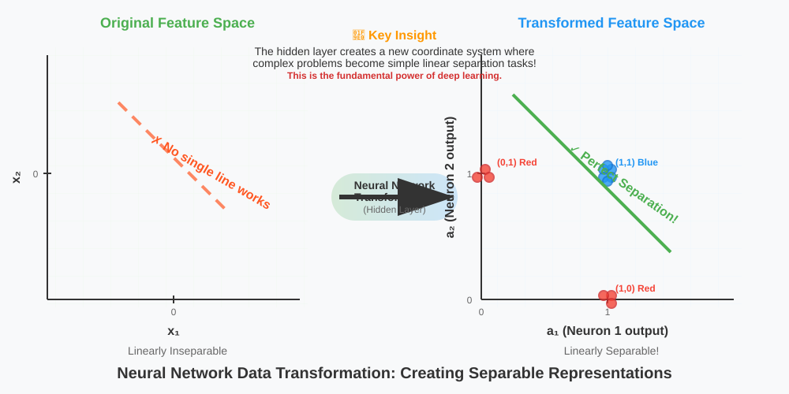
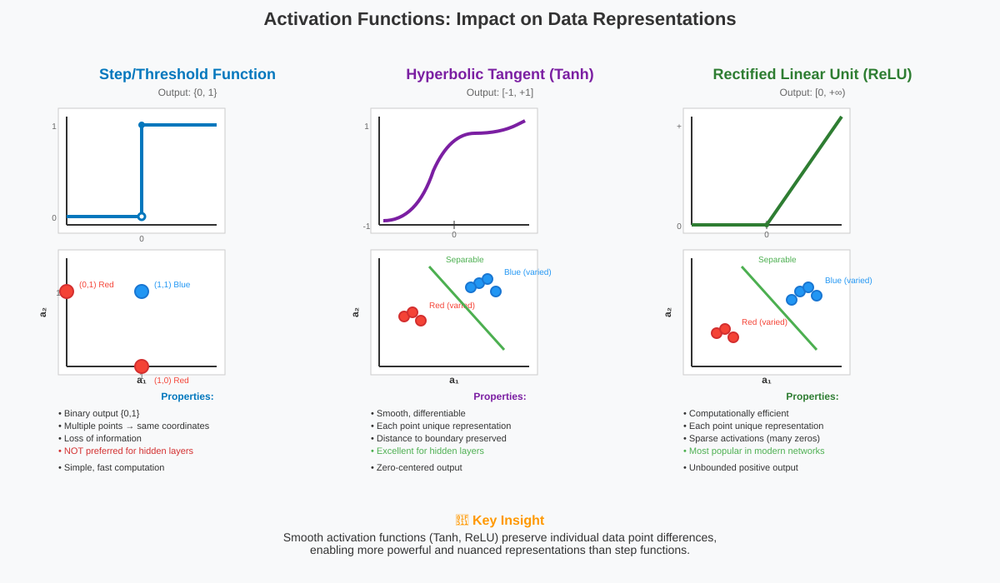

Neural Network Representations: One Hidden Layer
🧭 Quick Navigation
- Introduction
- The Architecture: One Hidden Layer with Two Neurons
- Mathematical Foundation
- The Classification Challenge
- Two Linear Classifiers in Action
- Data Transformation and New Encoding
- Activation Functions Comparison
- The Power of Deep Learning
- Implementation Examples
- References & Further Reading
🚀 Introduction
Neural networks achieve their remarkable power not just through complex computations, but through their ability to create new representations of data. This documentation explores how even a simple one-hidden-layer network with just two neurons can transform linearly inseparable data into a space where linear separation becomes possible.
We'll examine the fundamental concept behind deep learning: internal feature engineering - the automatic creation of better data representations that make complex problems solvable with simple decision boundaries.

🏗️ The Architecture: One Hidden Layer with Two Neurons

The foundation of our exploration is a simple yet powerful architecture:
- Input Layer: Two features (x₁, x₂)
- Hidden Layer: Two neurons with independent weights
- Output Layer: Single prediction unit
Each neuron in the hidden layer acts as an independent linear classifier, learning different aspects of the data representation.
Key Components
| Component | Function | Mathematical Representation |
|---|---|---|
| Input Features | Raw data coordinates | x₁, x₂ |
| Hidden Neurons | Feature extractors | Z₁, Z₂ |
| Weights | Learnable parameters | W₁₁, W₁₂, W₂₁, W₂₂ |
| Activation Functions | Non-linear transformations | f₁(Z₁), f₂(Z₂) |
| Output | Final prediction | f(z) |
🧮 Mathematical Foundation
The mathematical formulation of our one-hidden-layer network involves two key transformation steps:
Forward Pass Equations
Hidden Layer Computations:
Z₁ = X₁ × W₁₁ + X₂ × W₂₁
Z₂ = X₁ × W₁₂ + X₂ × W₂₂
Activation Applications:
a₁ = f₁(Z₁)
a₂ = f₂(Z₂)
Output Layer:
output = g(a₁, a₂)
Weight Matrix Representation
The transformation can be expressed in matrix form:
[Z₁] [W₁₁ W₂₁] [X₁]
[Z₂] = [W₁₂ W₂₂] [X₂]
Where each neuron learns its own set of weights independently during training, allowing them to capture different patterns in the data.
🎯 The Classification Challenge

Consider a dataset with two classes (Red and Blue) that cannot be separated by a single straight line in the original feature space. This represents a fundamental limitation of linear classifiers.
Why Single Linear Classifiers Fail
- Linear Decision Boundary: Can only create straight-line separations
- Complex Data Distributions: Real-world data often has non-linear patterns
- XOR-like Problems: Require multiple decision boundaries
The solution lies in creating a new representation where linear separation becomes possible.
⚡ Two Linear Classifiers in Action

By deploying two linear classifiers in parallel, we create multiple decision boundaries that work together:
Classifier Operations
Classifier 1 (a₁): - Creates decision boundary with positive/negative sides - Points on positive side → output = 1 - Points on negative side → output = 0
Classifier 2 (a₂): - Independent decision boundary - Different orientation from Classifier 1 - Binary output based on position relative to boundary
Example Data Point Classifications
| Data Point | Classifier 1 (a₁) | Classifier 2 (a₂) | New Coordinates |
|---|---|---|---|
| m₁ (Red) | 0 (negative side) | 1 (positive side) | (0, 1) |
| m₂ (Blue) | 1 (positive side) | 1 (positive side) | (1, 1) |
| m₃ (Red) | 1 (positive side) | 0 (negative side) | (1, 0) |
🔄 Data Transformation and New Encoding

The magic happens when we plot the transformed data in the new coordinate system defined by (a₁, a₂):
Original vs. New Representation
Original Space: - Red and Blue points intermixed - No single line can separate classes - Requires complex decision boundary
New Encoded Space: - Clear separation emerges - All Red points at (0,1) and (1,0) - All Blue points at (1,1) - Single straight line achieves perfect separation
The Encoding Process
This transformation represents the core principle of feature learning in deep networks:
- Feature Extraction: Hidden neurons learn relevant features
- Representation Learning: Data mapped to more useful coordinate system
- Simplified Decision Making: Output layer works on better representation
📊 Activation Functions Comparison

Different activation functions create different types of encodings, each with unique properties:
Step/Threshold Function
- Output Range: {0, 1}
- Characteristic: Binary decisions
- Limitation: Multiple points map to same coordinates
- Use Case: Simple binary classification
Tanh Function
- Output Range: [-1, +1]
- Characteristic: Smooth transitions
- Advantage: Preserves distance to decision boundary
- Benefit: Each point gets unique representation
ReLU Function
- Output Range: [0, +∞)
- Characteristic: Zero for negative inputs
- Advantage: Computationally efficient
- Benefit: Maintains data uniqueness while clustering
Activation Function Comparison Table
| Function | Range | Smoothness | Uniqueness | Computational Cost |
|---|---|---|---|---|
| Step | {0,1} | No | Low | Minimal |
| Tanh | [-1,1] | High | High | Moderate |
| ReLU | [0,∞) | Partial | High | Low |
Key Insight: Smooth activation functions (Tanh, ReLU) preserve individual data point differences, making them superior for building powerful predictive models. This is why step functions are rarely used in hidden layers of modern deep networks.
🌟 The Power of Deep Learning
The fundamental insight from this analysis reveals why deep learning is so powerful:
Internal Feature Engineering
Traditional Machine Learning: - Manual feature engineering required - Domain expertise needed for feature design - Limited by human creativity and insight
Deep Learning: - Automatic feature discovery - Hidden layers learn optimal representations - Data-driven feature creation
Representation Learning Benefits
- Complexity Reduction: Complex problems → simple decision boundaries
- Automatic Discovery: No manual feature engineering required
- Scalability: Principles extend to deeper, more complex networks
- Generalization: Learned features often transfer to related problems
Beyond Two Neurons
This same principle scales to: - Deeper Networks: Multiple hidden layers create hierarchical representations - More Neurons: Richer, more nuanced feature spaces - Different Architectures: CNNs, RNNs, Transformers all use this core idea
💻 Implementation Examples
Basic Neural Network Implementation
import numpy as np
import matplotlib.pyplot as plt
from sklearn.datasets import make_classification
# Create sample data
X, y = make_classification(n_samples=100, n_features=2, n_redundant=0,
n_informative=2, n_clusters_per_class=1,
random_state=42)
# Simple neural network class
class SimpleNN:
def __init__(self):
# Initialize weights for hidden layer
self.W1 = np.random.randn(2, 2) # Input to hidden
self.W2 = np.random.randn(2, 1) # Hidden to output
def sigmoid(self, x):
return 1 / (1 + np.exp(-x))
def forward(self, X):
# Hidden layer
self.z1 = np.dot(X, self.W1)
self.a1 = self.sigmoid(self.z1)
# Output layer
self.z2 = np.dot(self.a1, self.W2)
output = self.sigmoid(self.z2)
return output
def get_hidden_representation(self, X):
self.z1 = np.dot(X, self.W1)
return self.sigmoid(self.z1)
# Example usage
nn = SimpleNN()
hidden_rep = nn.get_hidden_representation(X)
# Plot original vs hidden representation
fig, (ax1, ax2) = plt.subplots(1, 2, figsize=(12, 5))
ax1.scatter(X[:, 0], X[:, 1], c=y, cmap='coolwarm')
ax1.set_title('Original Feature Space')
ax1.set_xlabel('Feature 1')
ax1.set_ylabel('Feature 2')
ax2.scatter(hidden_rep[:, 0], hidden_rep[:, 1], c=y, cmap='coolwarm')
ax2.set_title('Hidden Layer Representation')
ax2.set_xlabel('Hidden Neuron 1')
ax2.set_ylabel('Hidden Neuron 2')
plt.tight_layout()
plt.show()
Interactive Visualization
import plotly.graph_objects as go
from plotly.subplots import make_subplots
def visualize_transformation(X, y, weights):
"""Interactive visualization of data transformation"""
# Compute hidden representations
hidden = np.tanh(np.dot(X, weights))
# Create subplot
fig = make_subplots(rows=1, cols=2,
subplot_titles=('Original Space', 'Hidden Space'))
# Original space
fig.add_trace(
go.Scatter(x=X[:, 0], y=X[:, 1],
mode='markers',
marker=dict(color=y, colorscale='RdBu'),
name='Original'),
row=1, col=1
)
# Hidden space
fig.add_trace(
go.Scatter(x=hidden[:, 0], y=hidden[:, 1],
mode='markers',
marker=dict(color=y, colorscale='RdBu'),
name='Transformed'),
row=1, col=2
)
fig.update_layout(title='Neural Network Data Transformation')
fig.show()
# Example weights that create good separation
weights = np.array([[1.5, -1.0],
[-0.5, 1.2]])
visualize_transformation(X, y, weights)
📚 References & Further Reading
📖 Essential Papers
- Universal Approximation Theorem - Theoretical foundation for neural network expressivity
- Deep Learning - Comprehensive review by Bengio, LeCun, and Hinton
- Representation Learning - Foundational paper on learned representations
🏛️ Classic References
- Cybenko, G. (1989). "Approximation by superpositions of a sigmoidal function"
- Hornik, K. (1991). "Approximation capabilities of multilayer feedforward networks"
- Rumelhart, D.E. (1986). "Learning representations by back-propagating errors"
🔗 Practical Resources
- Neural Networks and Deep Learning - Michael Nielsen's online book
- Deep Learning Specialization - Andrew Ng's comprehensive course
- Distill.pub Neural Networks - Interactive visualizations
🛠️ Implementation Libraries
🎓 Advanced Topics
- Geometric Deep Learning - Understanding neural networks through geometry
- Information Theory in Deep Learning - Representation learning from information perspective
- Neural Tangent Kernel Theory - Mathematical framework for infinite-width networks
Created with ❤️ for the deep learning community. This documentation serves as a foundation for understanding how neural networks create powerful internal representations that enable complex pattern recognition.